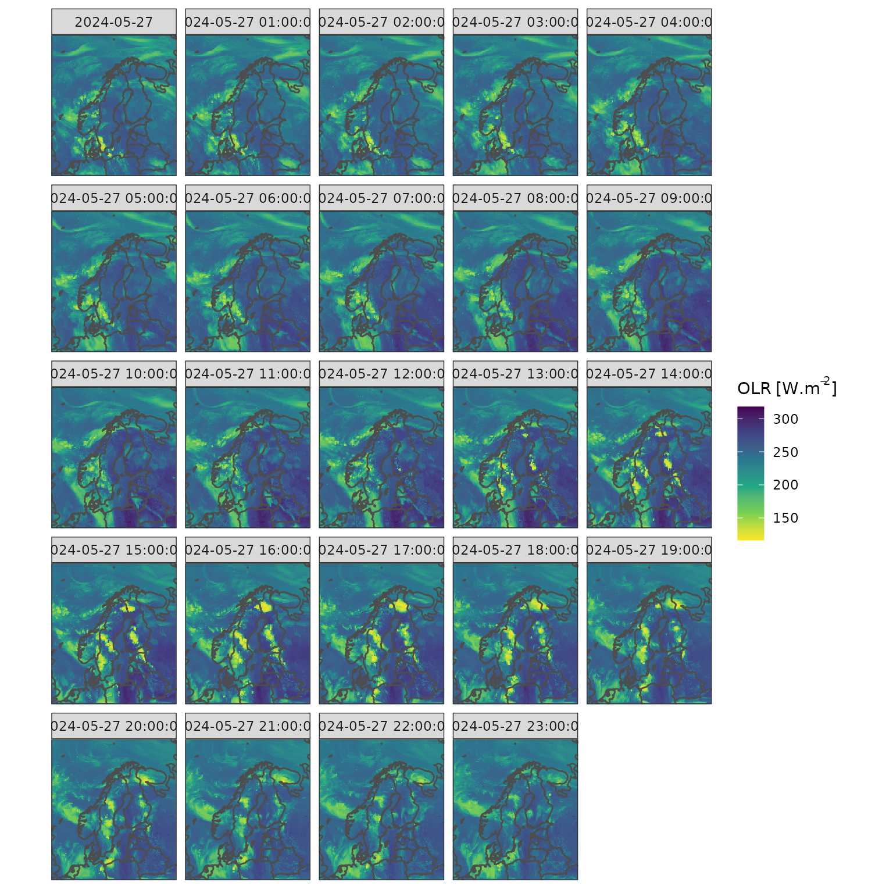
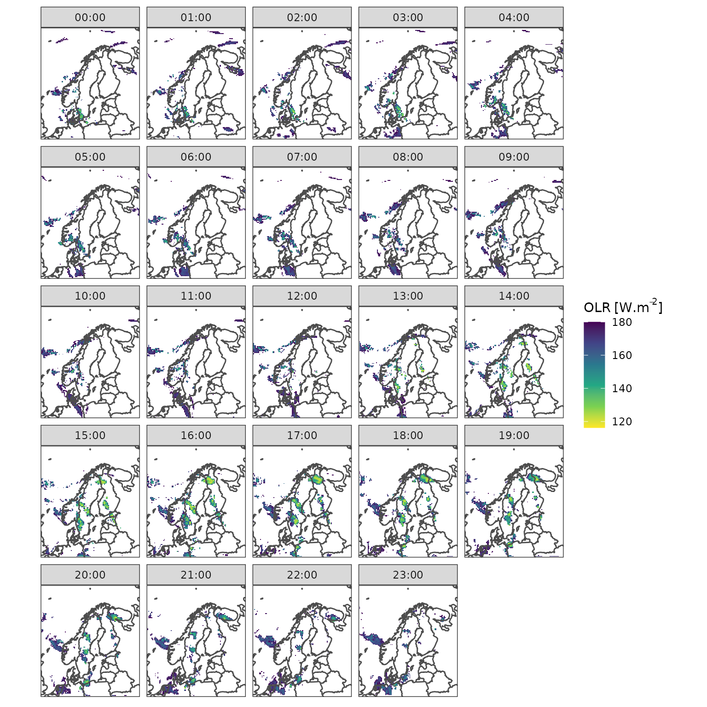
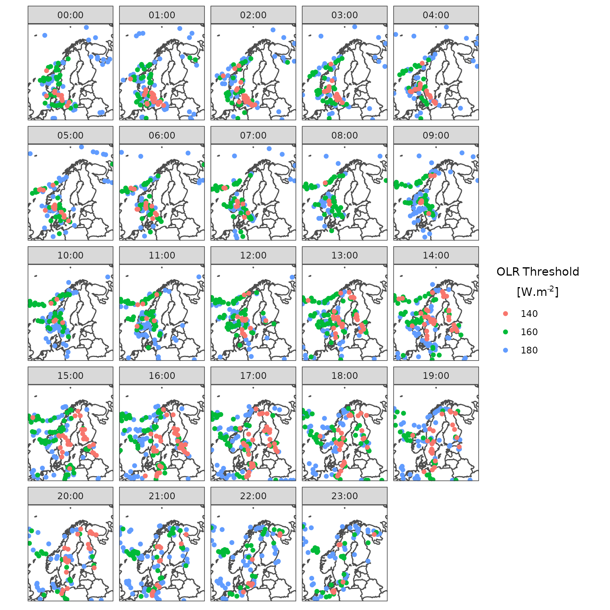
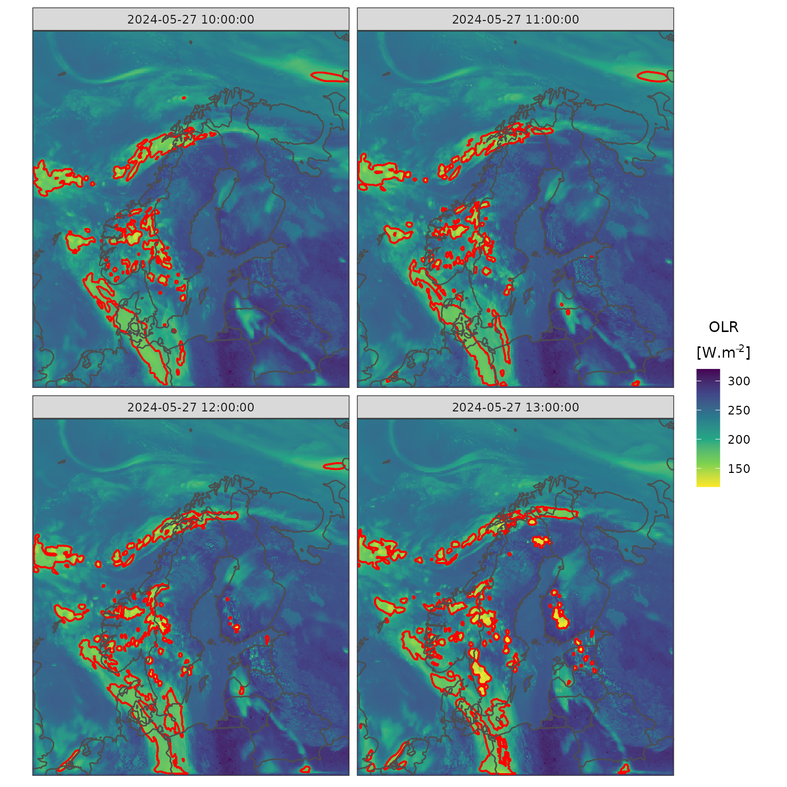
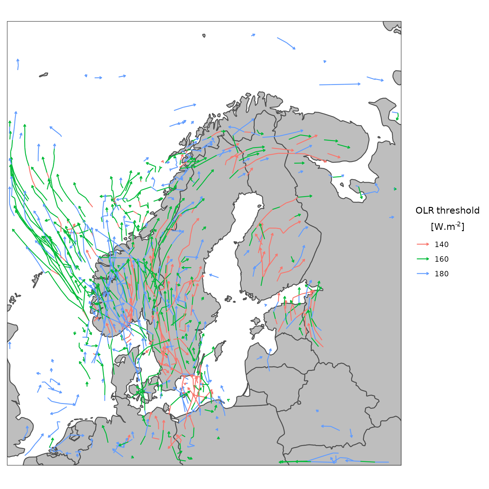
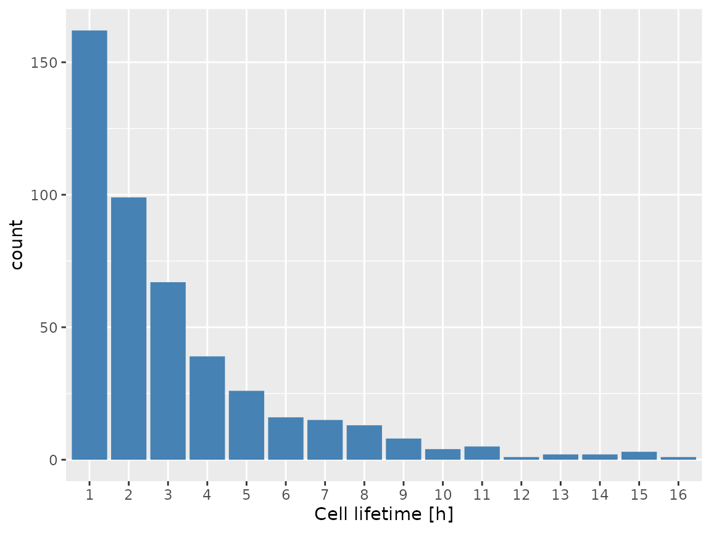

In this article, we show an example of tracking features in an outgoing longwave radiation field from the NWP model MEPS. We are going to make use of the harpIO package to load the data and the ggplot2 package, together with some expansions from the harpVis package to plot the data.
First we need to load the data using read_forecast()
from the harpIO package. The data are downloaded from the open
data Thredds server at the Norwegian Meteorological Institute.
There are a few steps we need to go through to ensure we read the
data properly. First we’ll add the outgoing longwave parameter to the
parameter definitions so that read_forecast() knows what
parameter to extract. The data are also negative for outgoing radiation
so we multiply by -1
my_params <- add_param_def(
"olr",
netcdf = new_netcdf_param("toa_outgoing_longwave_flux"),
func = function(x) x * -1
)Then we set the path and template for the file(s) to read, as well as some information about the netcdf files.
url <- "https://thredds.met.no/thredds/dodsC/meps25epsarchive"
template <- "{YYYY}/{MM}/{DD}/{fcst_model}_sfc_{YYYY}{MM}{DD}T{HH}Z.ncml"
file_opts <- netcdf_opts(
z_var = "top_of_atmosphere", ref_time_var = "forecast_reference_time"
)And now we can read the data…
olr <- read_forecast(
dttm = 2024052700,
fcst_model = "meps_det",
parameter = "olr",
lead_time = seq(0, 23),
file_path = url,
file_template = template,
file_format = "netcdf",
file_format_opts = file_opts,
param_defs = my_params,
return_data = TRUE
)
#> Reading https://thredds.met.no/thredds/dodsC/meps25epsarchive/2024/05/27/meps_det_sfc_20240527T00Z.ncmlFeature detection is done using thresholds to identify contiguous features in the field of interest at each time. This requires careful selection of thresholds, so as a first step we will plot the OLR at each time step.
countries <- get_map(get_domain(olr$fcst), polygon = FALSE)
ggplot() +
geom_georaster(
aes(geofield = fcst), olr,
upscale_factor = 8, upscale_method = "downsample"
) +
geom_path(aes(x, y), countries, colour = "grey30") +
facet_wrap(~format(valid_dttm, "%H:%M")) +
scale_fill_viridis_c(bquote(OLR~"["*W.m^{-2}*"]"), direction = -1) +
coord_equal(expand = FALSE) +
theme_harp_map()
It looks like most of the interesting features are for OLR < ~180. We can get a better idea by masking all values that are > 180, by adding limits to the colour scale.
countries <- get_map(get_domain(olr$fcst), polygon = FALSE)
ggplot() +
geom_georaster(
aes(geofield = fcst), olr,
upscale_factor = 8, upscale_method = "downsample"
) +
geom_path(aes(x, y), countries, colour = "grey30") +
facet_wrap(~format(valid_dttm, "%H:%M")) +
scale_fill_viridis_c(
bquote(OLR~"["*W.m^{-2}*"]"), direction = -1,
limits = c(NA, 180), na.value = "white"
) +
coord_equal(expand = FALSE) +
theme_harp_map()
Using this information we will use thresholds of 180, 160 and 140 in
the feature detection, setting the target to “min” since we want
features to be identified that are less than the thresholds. Features
are detected using detect_features_multithreshold() that is
a wrapper around tobac.feature_detection.feature_detection_multithreshold
from the original Python package. We will only detect features that are
at least 16 contiguous pixels in size, and use the “weighted_diff”
method to set the position of the features.
features <- detect_features_multithreshold(
olr,
thresholds = c(180, 160, 140),
data_col = fcst,
target = "min",
n_min_threshold = 16,
position_threshold = "weighted_diff"
)We can now plot the feature locations for each threshold and time.
ggplot(features, aes(projection_x_coordinate, projection_y_coordinate)) +
geom_path(aes(x, y), countries, colour = "grey30") +
geom_point(aes(colour = factor(threshold_value))) +
facet_wrap(~format(as.POSIXct(timestr, tz = "UTC"), "%H:%M")) +
coord_equal(expand = FALSE) +
theme_harp_map() +
labs(colour = bquote(atop(OLR~Threshold,"["*W.m^{-2}*"]")))
Having run the feature detection, the next step is to associate
regions with the identified features. This is done using
segment_2d() that is a wrapper around the tobac.segmentation.segmentation_2D
function from the original Python package. Here a single threshold is
needed, and we use the highest of the thresholds we used in the feature
detection. segment_2d returns a named list, but we can
destructure using the %<-% operator from the
zeallot package.
library(zeallot)
c(segments, features) %<-% segment_2d(
features,
olr,
threshold = 180,
data_col = fcst,
target = "min"
)segments is a data frame with a geolist coloumn
that contains fields with a mask identifying the areas that are
associated with each feature, while features is the same as
the output of the previous step, but with an extra column giving the
number of cells associated with each feature. The segment masks can be
overlayed on top of the original OLR data. Here we just show 4
times.
ggplot() +
geom_georaster(
aes(geofield = fcst), olr[11:14, ],
upscale_factor = 4, upscale_method = "downsample"
) +
geom_geocontour(
aes(geofield = segmentation_mask), segments[11:14, ],
colour = "red"
) +
geom_path(aes(x, y), countries, colour = "grey30") +
facet_wrap(~valid_dttm) +
scale_fill_viridis_c(bquote(atop(OLR,"["*W.m^{-2}*"]")), direction = -1) +
coord_equal(expand = FALSE) +
theme_harp_map()
With the features identified, the tracking algorithm attempts to link
these features in time to produce tracks. The tracking is computed with
the link_tracks() function that is a wrapper around tobac.tracking.linking_trackpy
from the original Python package.
tracks <- link_tracks(
features,
olr,
data_col = fcst,
v_max = 20,
stubs = 2,
subnetwork_size = 100,
adaptive_step = 0.95,
adaptive_stop = 0.2
)Some of the arguments in the call to link_tracks()
require some experimentation, and are better explained in some of the tobac
examples.
The tracks for each of the identified cells can easily be plotted. For all tracks throughout the period this can be done making sure to remove untracked cells (these are labelled -1).
library(dplyr)
countries <- get_map(get_domain(olr$fcst))
ggplot(filter(tracks, cell > -1), aes(x, y)) +
geom_polygon(aes(group = group), countries, fill = "grey", colour = "grey30") +
geom_path(
aes(group = factor(cell), colour = factor(threshold_value)),
arrow = arrow(type = "open", angle = 30, length = unit(0.1, "cm"))
) +
labs(colour = bquote(atop(OLR~threshold, "["*W.m^{-2}*"]"))) +
coord_equal(expand = FALSE) +
theme_harp_map()
We could then plot some statistics, such as the distribution of the lifetimes of individual cells.
ggplot(
summarise(
filter(tracks, cell > -1),
lifetime = max(time_cell) / 3600,
.by = cell
)
) +
geom_bar(aes(x = factor(lifetime)), fill = "steelblue") +
labs(x = "Cell lifetime [h]")